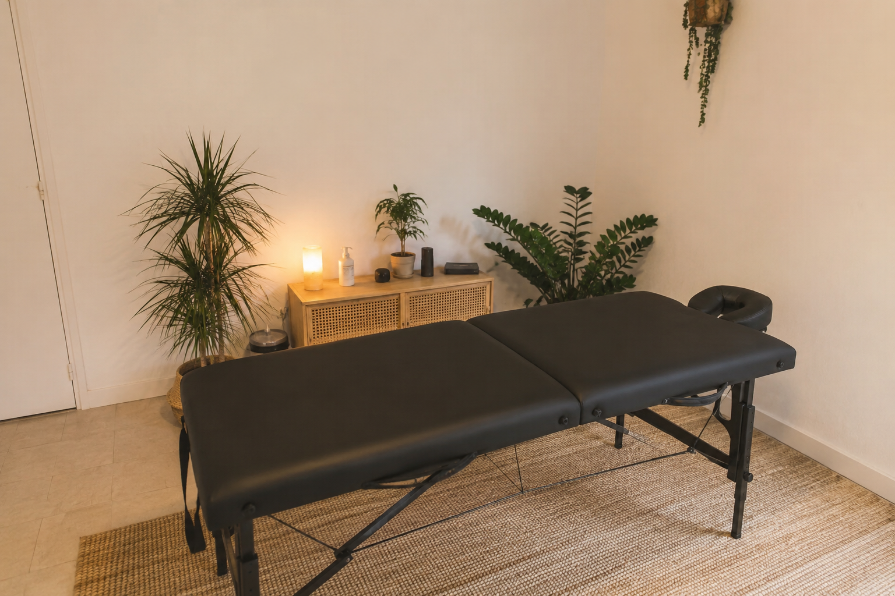

Table professionnelle
Je me déplace avec une table d’ostéopathie adaptée aux consultations à domicile.
Ostéopathe D.O. à domicile à Reignier-Ésery, Annemasse, Gaillard et alentours.
Laura Marin se déplace avec sa table professionnelle dans un rayon d’environ 20 minutes autour de Reignier-Ésery. Une consultation claire, douce et adaptée, sans avoir à vous déplacer.

Vous restez dans un environnement familier, je viens avec le matériel nécessaire pour une prise en charge professionnelle et confortable.
Je me déplace avec une table d’ostéopathie adaptée aux consultations à domicile.
Vous évitez le trajet et restez confortablement à votre domicile, selon vos contraintes.
Les techniques sont choisies selon votre âge, votre douleur, votre confort et votre situation.
Une facture peut être remise sur demande pour une éventuelle prise en charge par votre mutuelle.
Quelques motifs fréquents de consultation. L’ostéopathie accompagne le confort et la mobilité, sans remplacer un avis médical.
Lombalgies, tensions dorsales ou inconforts liés au travail et au quotidien.
Raideurs, tensions cervicales et inconforts posturaux.
Accompagnement adapté en fonction de votre situation et des signes associés.
Épaule, genou, cheville, entorse ou gêne fonctionnelle.
Céphalées fonctionnelles et tensions associées, après élimination des signes d’alerte.
Inconforts liés aux changements corporels, avec des techniques adaptées.
Consultations douces, en complément du suivi médical et pédiatrique.
Préparation, récupération, prévention et accompagnement des tensions.
Maintien de la mobilité et amélioration du confort quotidien.
Tensions liées au rythme de vie, fatigue et inconforts fonctionnels.
La consultation à domicile est organisée simplement, avec un déroulement clair.

Je suis Laura Marin, ostéopathe D.O., diplômée après cinq années d’études. J’ai choisi l’ostéopathie parce que j’aime aider les personnes à se sentir mieux dans leur quotidien. Mes patients décrivent souvent ma prise en charge comme douce, attentive et efficace.
Mon objectif n’est jamais de faire craquer pour faire craquer, mais de comprendre votre situation et d’adapter la séance à votre corps, vos douleurs et vos besoins.
Les déplacements sont possibles dans un rayon d’environ 20 minutes autour de Reignier-Ésery. En cas de doute, envoyez-moi simplement un message.
Paiement accepté : espèces, chèque ou virement. Facture remise sur demande pour votre mutuelle.
Les réponses aux questions les plus courantes avant une consultation à domicile.
La consultation d’ostéopathie à domicile coûte 65 €.
Oui, je viens avec une table professionnelle et le matériel nécessaire à la consultation.
La durée varie selon la situation, mais il faut généralement prévoir environ 45 minutes à 1 heure.
Oui, les techniques sont adaptées à la grossesse. En cas de doute ou de suivi particulier, l’avis de votre médecin ou sage-femme reste prioritaire.
Oui, les nourrissons peuvent être accompagnés avec des techniques douces, toujours en complément du suivi médical et pédiatrique.
Certaines mutuelles remboursent partiellement l’ostéopathie. Une facture peut être remise sur demande.
Vous pouvez m’appeler ou m’envoyer un SMS avec votre ville, votre motif et vos disponibilités.
Je me déplace autour de Reignier-Ésery, Annemasse, Gaillard, Cranves-Sales, Vétraz-Monthoux, Bonne, La Roche-sur-Foron, Saint-Julien-en-Genevois et alentours selon distance.
Non. L’ostéopathie ne remplace pas un diagnostic ou un suivi médical.
L’ostéopathie ne remplace pas un avis médical. En cas de douleur brutale, traumatisme, fièvre, perte de force, douleur thoracique, essoufflement, malaise ou symptôme inhabituel, contactez un médecin ou les urgences.
Découvrez les premiers avis laissés par mes patients sur Google.
Étant coiffeuse, j’avais pas mal de problèmes de dos et tout ce qui s’ensuit… Elle a été formidable, à l’écoute, elle prend le temps et a de l’or dans les mains. J’en ai fait pas mal d’ostéo, et je ne la lâcherai pas ! Vous pouvez foncer les yeux fermés ! Merci encore !
Ostéopathe très compétente, je recommande !
Accueil et écoute de son client superbes. Séance complète et résultats au rendez-vous, je conseille.
Le téléphone est le plus simple pour organiser une consultation à domicile. Vous pouvez aussi envoyer un SMS avec votre ville, votre motif et vos disponibilités.
06 68 94 57 22Horaires : du lundi au samedi, de 9h à 19h.
Pour demander un rendez-vous, indiquez simplement votre ville, votre motif et vos disponibilités par téléphone ou SMS.
Téléphone : 06 68 94 57 22
Email : Laura.osteopathe@hotmail.com
Horaires : lundi au samedi, 9h-19h.
Zone : Reignier-Ésery, Annemasse, Gaillard, Cranves-Sales, Vétraz-Monthoux, Bonne, La Roche-sur-Foron, Saint-Julien-en-Genevois et alentours.